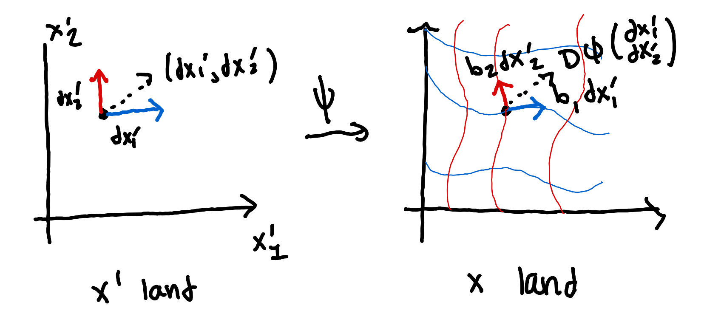
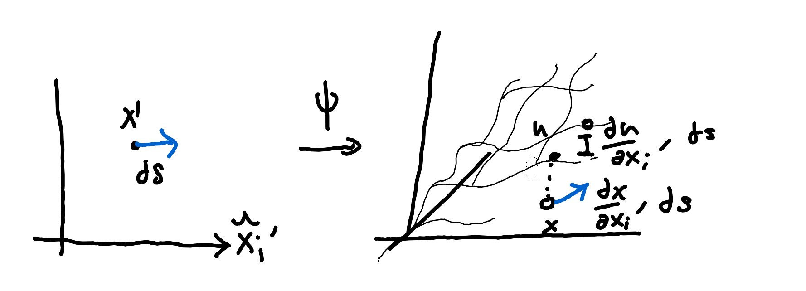
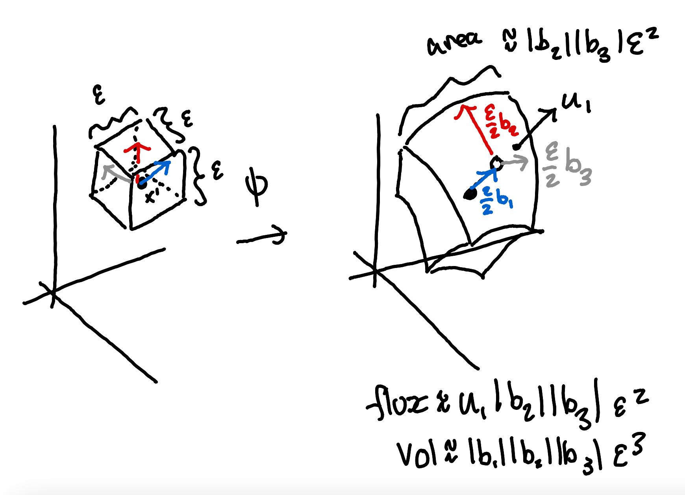

Home
Curvilinear Coordinate Systems
Some Formalism
Oftentimes, we are interested in representing the same function in two different coordinate systems.
For instance, we might choose to represent the function \(u(x,y,z) = x^2 + y^2 + z^2\) in Cartesian coordinates
by \(u(r,\theta,\phi) = r^2 \) in spherical coordinates which is simpler. This is a little upsetting formally;
you might argue that \( u(r,\theta,\phi) \) really ought to just be \( r^2 + \theta^2 + \phi^2\) (just plugging in the arguments).
Formally, you might imagine we have a function \(\psi\) which actually does the coordinate mapping \(x = \psi(x')\).
Then we would say there is another function \(\tilde{u}\) such that \(\tilde{u}(x') = u(\psi(x')) \). For instance, in spherical coordinates,
\[ \psi(r,\theta,\phi) = (r \cos\phi \sin\theta, r\sin\phi \sin\theta, r\cos\theta),\]
\[ \tilde{u}(r,\theta,\phi) = r^2. \]
So then what we mean by an expression like \(\frac{\partial u}{\partial r}\) is what one would rigorously call
\(\frac{\partial \tilde{u}}{\partial r}\), since \(\tilde{u}\) really is just a paraphrasing of \(u\) in the appropriate
coordinate system.
Cartesian Coordinates are Special
In a typical math class, you will define differential operators in terms of the arguments. For instance, \(\nabla u(a_1,a_2\ldots a_n)\) is the vector
whose kth entry is \(\partial_{a_k} u\). The physicists take a different approach. They would say that you really define a differential operator in a particular
coordinate system (almost definitely Cartesian), and to express the same "operator'' in a different coordinate system may require a more complicated expression.
For example, it would be totally WRONG to recycle the definition of \(\nabla\) in a new coordinate system and say that \(\nabla \cdot \tilde{u} = \partial_{r} \tilde{u}_1 + \partial_{\theta} \tilde{u}_2 + \partial_{\phi} \tilde{u}_3 \).
No, you want to take \(\nabla\) much more literally: the usual formula applies in the Cartesian coordinate system, and when working in another coordinate system, we need to define a map
that coincides in value with the Cartesian version.
Local Coordinate Systems and Gradients
Recall our construction that \(x = \psi(x')\). When one changes the value of \(x'_i\) by a smidge, we see that the
corresponding change in \(x\) is (by the chain rule)
\[ \frac{dx}{dx_i'} = \bigg(\frac{\partial \psi_1}{\partial x'_i}, \frac{\partial \psi_2}{\partial x'_i} \ldots \frac{\partial \psi_n}{\partial x'_i}\bigg) \]
This is of a course a vector. One can think about it sort of like the image of \(dx_i'\). That is, if one imagines drawing the set of grid lines, in which one parameter
varies at a time, it is the case that \(\frac{dx}{dx_i'}\) is tangent to the \(x_i'\) grid line which passes through \(x\). Define by \(b_i(x)\) this vector as a function of \(x\).
Provided the coordinate mapping \(\psi\) is bijective, it is reasonable to suspect that the \(\{b_i\}_i\)'s form a basis for \(\mathbb R^n\). That suspicion is correct.
These local coordinate systems will provide a nice middle man between coordinate transformations.

As an illustrative example, we shall use these local coordinates to re-express the gradient. Suppose that the \(\{b_i\}_i\)'s are orthogonal, although perhaps not normal.
Consider what happens if we increase \(x_i'\) by some small perturbation \(ds\). This change in \(x_i'\) will also cause a change of
\( \frac{\partial u}{\partial x_i'} ds \) to the value of \(u\). At the same time, \(x\) changes by \(\frac{\partial x}{\partial x_i'} ds = \hat{b_i} ds |b_i| \); in other words, the
resulting perturbation in Cartesian space is by an amount \(ds |b_i|\) in the direction of \(\hat{b_i}\). Rescaling, it must then be the case that by moving a step \(ds\) in the
\(\hat{b_j}\) direction, then \(u\) changes by \(\frac{1}{|b_i|} \frac{\partial u}{\partial x_i'}\). Thus, to be consistent with our observations, we require that
\[ \nabla u \cdot \hat{b_i} = \frac{1}{|b_i|} \frac{\partial u}{\partial x_i'} \]
And because the \(b_i\)'s are orthogonal, this implies
\[ \nabla u = \sum_{i=1}^n \frac{1}{|b_i|} \frac{\partial u}{\partial x_i'} \hat{b_i}. \]

It's a little bit catchier to just write, in the operator sense,
\[ \nabla = \hat{b_i} \frac{1}{|b_i|} \frac{\partial}{\partial x_i'} \]
The sum is implicit in the above expression, as is traditional in the Einstein notation. This expression can also be derived using the multiariate chain rule. At the same time, I'm trying to give a taste of infinitesimal reasoning, so this is preferred.
Note that if the \(b_i\)'s weren't orthogonal, our observation about \(\nabla u \cdot \hat{b_i}\) would still hold. The only part that would go wrong is the reconstruction of the gradient in Cartesian space.
We can still say something (convoluted), however. If we assemble
our b vectors into the columns of a matrix B, we can assume that \(\nabla u = B v\) for some vector \(v\). This is the same as saying that
\(\nabla u = \sum_{i=1}^n v_i b_i\). Then necessarily
\[ \frac{\partial u}{\partial x_j'} = |b_j| (\hat{b_j} \cdot \nabla u) = b_j^\top B v \]
Considering this equation for each \(j\) can be stated in vector form as
\[ \begin{pmatrix} \frac{\partial u}{\partial x_1'} \\ \ldots \\ \frac{\partial u}{\partial x_n'} \end{pmatrix} = B^\top B v \]
Because the b's are linearly independent, we can speak of \( (B^\top B)^{-1} \) and thus,
\[ v_i = \sum_{j=1}^n (B^\top B)^{-1}_{i,j} \frac{\partial u}{\partial x_j'}, \]
\[ \nabla u = \sum_{i=1}^n b_i v_i = \sum_{i=1}^n b_i \sum_{j=1}^n (B^\top B)^{-1}_{i,j} \frac{\partial u}{\partial x_i'} = \sum_{i} \hat{b_i} \bigg( \sum_j |b_i| (B^\top B)^{-1}_{i,j} \frac{\partial u}{\partial x_j'} \bigg). \]
One can easily check that in the orthogonal case this coincides with our first finding.
The Divergence
We might also be interested in writing the divergence in the new coordinate system. By combining this with the gradient, for instance, we
can obtain the Laplacian. Because the divergence represents the extent to which a point acts as a source / sink, we know it is invariant under rotations.
What this is means is that, once more for an orthogonal coordinate system, if
\[ u(x) = \sum_{i=1}^n u_i b_i \]
Where the \(b_i\)'s are orthonormal, then it should still hold that \(\nabla \cdot u = \sum_{i=1}^n \frac{\partial u_i}{\partial x_i} \). I will assume this without proof.
What is less obvious is what to do in the orthogonal (but not orthonormal) scenario.
Consider the image of \(x'\) and the ambient surfaces formed by \(x'_i \pm \frac{1}{2} \epsilon\). These will all form a surface represented in Cartesian coordinates by
some \(S\) with an interior \(V\). By the divergence theorem,
\[ vol(V) div(u) \approx \int_{S} u \cdot n da \]
And in particular, this approximation becomes arbitrarily good for smaller and smaller \(\epsilon\):
\[ div(u) = \lim_{\epsilon \to 0} \frac{1}{vol(V)} \int_{S} u \cdot n da.\]
The easy part is the denominator: to the first order, \( vol(V) = |b_1||b_2| \ldots |b_n| \epsilon^n \).

The numerator is a little more complicated. Consider the fixing of coordinate i. Then we will have two integrals involved in \(S\), one of which is approximately
\( \epsilon^{n-1} u_i \prod_{j \neq i} |b_j|\); the \(u_i\) part corresponds to \(u \cdot n\), as the normal to the surface of a
And the other being approximately \(- \epsilon^{n-1} u_i \prod_{j \neq i} |b_j|\), just because we flip the surface normal. As we take \(\epsilon\) to be very very
small, this difference is basically
\[ \epsilon^{n-1} \cdot \epsilon \frac{\partial}{\partial x_i'}\bigg(u_i \prod_{j\neq i}|b_j|\bigg) \]
Thus,
\[ \nabla \cdot u = \lim_{\epsilon \to 0} \frac{\epsilon^n \sum_{i=1}^n \frac{\partial}{\partial x_i} \bigg(u_i \prod_{j\neq i}|b_j|\bigg) + \text{low order}}{\epsilon^n \prod_{i}|b_i| + \text{low order}} =\frac{\sum_{i=1}^n \frac{\partial}{\partial x_i} \bigg(u_i \prod_{j\neq i}|b_j|\bigg)}{\prod_{i}|b_i|}. \]
Once more, this analysis was most simple because the b vectors were orthogonal. It is possible to extend the analysis for the more general case. We just need to be a
bit more cautious about our expression for areas. Indeed, we repeat the same analysis using the level surfaces of the different coordinates for a given \(\epsilon\). Now, the
total volume is \( \epsilon^n \sqrt{\det(B^\top B)}\), where \(B\) is the matrix
\[ B = \begin{bmatrix} b_1 & b_2 \ldots b_n \end{bmatrix}. \]
Now, consider the level surfaces for a given coordinate i. The n-1 dimensional volume of the surface spanned by all vectors except \(b_i\) is known to be \(\sqrt{\det(B_{\neq i}^\top B_{\neq i})}\), where
\[ B_{\neq i} = \begin{bmatrix} b_1 \ldots b_{i-1} & b_{i+1} \ldots b_n \end{bmatrix}. \]
Let \(b_i\) decompose as \(b_i^1 + \b_i^2\), where \(b_i^1\) is orthogonal to the vectors \(b_1 \ldots b_{i-1},b_{i+1}\ldots b_n\) and
\(b_i^2\) is in their span. Necessarily, \(b_i^1\) is parallel to the surface normal n. And thus, \(b_i \cdot n = |b_i^1|\). Therefore,
if \(u = \sum_{j} u_j \hat{b_j} \) is the decomposition of u in the b basis, it ought to be that \(u \cdot n = u_i \frac{1}{|b_i|} b_i \cdot n = u_i \frac{|b^1_i|}{|b_i|} \). Consequently, the integral is:
\[ \approx \epsilon^{n-1} \frac{1}{|b_i|} \sqrt{\det(B_{\neq i}^\top B_{\neq i})} |b^1_i| u_i = \frac{1}{|b_i|} \epsilon^{n-1} \sqrt{\det(B^\top B)} u_i \]
we note that \(\sqrt{\det(B_{\neq i}^\top B_{\neq i})} |b^1_i| u_i\) ought to be the the volume of the parallelipiped formed by the \(b_i\)'s, since
\(\sqrt{\det(B_{\neq i}^\top B_{\neq i})}\) is the area of hte n-1 dimensional base and \(|b^1_i|\) is its height.
Now, for coordinate i, there are two faces. And the sum are their fluxes is approximately
\[ \epsilon^{n} \frac{\partial}{\partial x_i}\bigg(\frac{u_i}{|b_i|} \sqrt{\det(B^\top B)} \bigg). \]
Then, by the same logic as before,
\[ \nabla \cdot u = \lim_{\epsilon \to 0} \frac{\epsilon^n \sum_{i=1}^n \frac{\partial }{\partial x_i} \bigg(\frac{u_i}{|b_i|} \sqrt{\det(B^\top B)}\bigg) + \text{ low order}}{\epsilon^n \sqrt{\det(B^\top B)}+ \text{ low order}} = \frac{\sum_{i=1}^n \frac{\partial }{\partial x_i} \bigg(\frac{u_i}{|b_i|} \sqrt{\det(B^\top B)}\bigg)}{\sqrt{\det(B^\top B)}} \]
The Laplacian
Combining the gradient with the divergence, we can easily obtain the Laplacian. It's now obvious in orthogonal curvilinear coordinates that
\[ \Delta u = \nabla \cdot \nabla u = \frac{1}{|b_1|\ldots |b_n|} \sum_{i=1}^n \frac{\partial}{\partial x_i'} \bigg( \frac{1}{|b_i|} \frac{\partial u}{\partial x_i'} \cdot \prod_{j \neq i} |b_j| \bigg) \]
For most applications, this is a pretty reasonable assumption. For the more general non-orthogonal case, the same substitutions yield:
\[ \Delta u = \frac{\sum_{i=1}^n \frac{\partial }{\partial x_i} \bigg( \sqrt{\det(B^\top B)} \sum_{j} (B^\top B)^{-1}_{i,j} \frac{\partial u}{\partial x_j'} \bigg)}{\sqrt{\det(B^\top B) }} \]
It is fairly common to denote by \(g\) the determinant of \(B^\top B\), and to write for \(g^{ij}\) the (ij)th entry of \(g^{-1}\). With this simplification, in the Einstein sum notation,
\[ \Delta = \frac{1}{\sqrt{g}}\frac{\partial}{\partial x_i} \bigg( \sqrt{g} g^{ij} \frac{\partial} {\partial x_j'} \bigg) \]
In the above expression, there is an implicit inner sum over \(j\) and outer sum over \(i\). Sometimes, g is not used for the determinant, but rather the Gram matrix
\(B^\top B\). Such a matrix is called a metric tensor. This is because for any dx' in parameter space,
\[ (dx')^\top g (dx') = |B(dx')|^2 = \sum_{i} \bigg(\sum_{j} \frac{\partial x_i}{\partial x_j} dx_j'\bigg)^2 \]
computes the length of the image of dx' when mapped according to the change of variables. This matrix is of considerable interest because it allows one to make statements about lengths in the
"post-transformation" space using "pre-transformation" objects.
The Laplace-Bertrami Operator
It is conceivable that we might not have a function \(u\) defined over all of space. Rather, it might be defined on a lower dimensional subspace, like the sphere. For the sphere, we know that it is just the level set of the r=1 coordinates. Thus, we could imagine constructing analagous vector operators
by eliminating coordinates that are no longer relevant. For instance, we might replace the matrix \(B\) for spherical coordinates with the matrix \(B_{\neq r} = [b_{\phi} b_{\theta}]\). Then defining \(g\) again as the determinant of the Gram matrix and
\(g^{ij}\) as the ijth entry of the inverse Gram matrix, then
\[ \Delta u = \frac{1}{\sqrt{g}}\frac{\partial}{\partial x_i} \bigg( \sqrt{g} g^{ij} \frac{\partial} {\partial x_j'} u \bigg) \]
is still a "Laplacian"-like function of u. And indeed, this works in general. For any d-dimensional smooth manifold \(M\) and \(x \in M\), it possesses a local parameterization \(\psi\) sending points
\( (x_1'\ldots x_d') \in \mathbb R^d\) to \(M\). Thus, \(x_i'\) works just like any old coordinate, and we can apply the same formula for the Laplace-Bertrami operator.
While there is much, much more to calculus on manifolds than I have let on, I hope this provides at least some intuition for the definitions that exist.
Examples
Example 1: Cylindrical Coordinates
For cylindrical coordinates, the coordinate map is given explicitly by
\[ \psi(r,\theta,h) = (r\cos\theta, r\sin\theta, h) \]
The implication for the scale factors is that
\[ b_r = \frac{\partial x}{\partial r} = \begin{pmatrix} \cos(\theta) \\ \sin(\theta) \\ 0 \end{pmatrix}, b_{\theta} = \begin{pmatrix} -r\sin(\theta) \\ r\cos(\theta) \\ 0 \end{pmatrix}, b_h = \begin{pmatrix} 0 \\ 0 \\ 1 \end{pmatrix} \]
\[ |b_r| = 1, |b_\theta| = r, |b_z| = 1 \]
This means that the gradient can be very easily expressed as
\[ \nabla u = \begin{pmatrix} \cos(\theta) \frac{\partial u}{\partial r} - \frac{1}{r} \sin (\theta)\frac{\partial u}{\partial \theta} \\ \sin(\theta) \frac{\partial u}{\partial r} + \frac{1}{r} \cos (\theta) \frac{\partial u}{\partial \theta} \\ \frac{\partial u}{\partial h} \end{pmatrix} \]
The divergence is
\[ \frac{1}{r} \bigg( \frac{\partial}{\partial r}(r u_r) + \frac{\partial}{\partial \theta}(u_\theta) + \frac{\partial}{\partial h}(u_h) \bigg) \]
Where \(u_r\) is the projection of \(u\) onto the radial direction, \(u_\theta\) is the projection of \(u\) onto the counterclockwise tangent direction, and \(u_h\) is just the
vertical component:
\[ u_r = \cos\theta u_x + \sin\theta u_y, u_\theta = -\sin\theta u_x + \cos\theta u_y, u_h = u_z \]
Finally, for a scalar, the Laplacian is
\[ \Delta u = \frac{1}{r} \bigg[ \frac{\partial}{\partial r}\bigg(r \frac{\partial u}{\partial r} \bigg) + \frac{\partial}{\partial \theta}\bigg(\frac{1}{r} \frac{\partial u}{\partial \theta} \bigg) + \frac{\partial}{\partial h}\bigg(r \frac{\partial u}{\partial h} \bigg) \bigg] \]
It is easy to check that simplifies a tad to the more well known expression:
\[ \Delta u = \frac{1}{r} \frac{\partial}{\partial r}\bigg(r \frac{\partial u}{\partial r} \bigg) + \frac{1}{r^2} \frac{\partial^2 u}{\partial \theta^2} + \frac{\partial^2 u}{\partial h^2}. \]
Example 2: Spherical Coordinates
One can repeat the same analysis for spherical coordinates (I promise nothing interesting happens). When one does this, they find:
\[ \Delta u = \frac{1}{r} \frac{\partial^2}{\partial r^2}(ru) + \frac{1}{r^2}\bigg[\frac{1}{\sin \theta} \frac{\partial}{\partial \theta}\bigg( \sin\theta \frac{\partial u}{\partial \theta} \bigg) + \frac{1}{\sin^2\theta} \frac{\partial^2 u}{\partial \phi^2}\bigg]. \]
This equation is of great importance when one goes to derive the spherical harmonics. Inspecting the above equation, we can see that we have completely isolated the angular part of the Laplacian as the expression within the
brackets. Thus, that expression should give the local difference of u "along the sphere." It is then quite believable that the expression is in fact the
Laplace-Bertrami operator on the sphere.